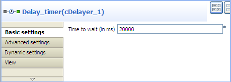
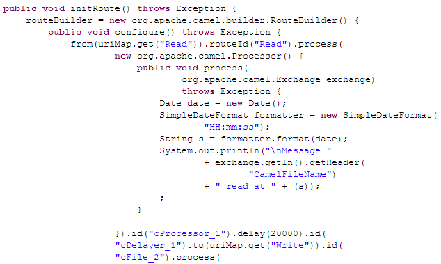
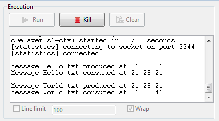

|
Famille de composant |
Processor | |
|
Fonction |
Le composant cDelayer retarde la livraison de messages. | |
|
Objectif |
Le composant cDelayer vous permet de configurer un délai dans le routage de message. | |
|
Basic settings |
Time to wait(in ms) |
Renseignez ce champ à l'aide d'un entier pour configurer le temps à attendre avant d'envoyer le message à l'endpoint suivant. |
|
Utilisation |
Ce composant est généralement utilisé comme composant intermédiaire dans une Route. | |
|
Limitation |
n/a | |
Dans ce scénario, le composant cDelayer est utilisé pour retarder de 20 secondes le routage de chaque message vers l'endpoint de destination.
Ce scénario utilise un composant cDelayer, deux cFile et deux cProcessor.
Du dossier Messaging de la Palette, déposez deux composants cFile dans l'espace de modélisation graphique, l'un pour lire des fichiers d'un dossier local et l'autre pour écrire les fichiers dans un autre dossier local.
Du dossier Processor, déposez deux composants cProcessor dans l'espace de modélisation graphique, un à côté du composant de lecture Read, que vous nommez Read_monitor, qui monitore les messages lus et l'autre à côté du composant d'écriture Write, que vous nommez Writer_monitor, qui monitore les messages écrits dans le dossier cible.
Du dossier Processor, déposez un composant cDelayer dans l'espace de modélisation graphique, entre le composant Read_monitor et le composant Write.
Reliez les composants à l'aide de liens Row > Route.
Nommez les composants comme vous le souhaitez afin de mieux identifier leur rôle dans la Route, comme dans la capture d'écran ci-dessus.
Double-cliquez sur le premier composant cFile nommé Read, pour ouvrir sa vue Basic settings.

Dans le champ Path, saisissez le chemin d'accès à vos fichiers source, ou parcourez votre système jusqu'à ceux-ci et laissez les autres paramètres tels qu'ils sont.
Répétez ces étapes pour définir le dossier de sortie dans les paramètres du second composant cFile nommé Write.
Double-cliquez sur le premier composant cProcessor nommé Read_monitor pour ouvrir sa vue Basics settings.

Dans la zone Code, personnalisez le code pour afficher l'heure à laquelle chaque message est lu depuis sa source :
Date date=new Date(); SimpleDateFormat formatter = new SimpleDateFormat("HH:mm:ss"); String s = formatter.format(date); System.out.println("\nMessage "+ exchange.getIn().getHeader("CamelFileName")+ " read at "+(s));Répétez ces étapes pour configurer le second cProcessor nommé Write_monitor pour afficher l'heure à laquelle chaque message est écrit dans sa cible :
Date date=new Date(); SimpleDateFormat formatter = new SimpleDateFormat("HH:mm:ss"); String s = formatter.format(date); System.out.println("Message "+ exchange.getIn().getHeader("CamelFileName")+ " written at "+(s));Double-cliquez sur le composant cDelayer nommé Delay_timer pour ouvrir sa vue Basic settings.
Dans le champ Time to wait (in ms), saisissez le nombre de millisecondes dont vous souhaitez retarder la livraison des messages. Notez que la valeur doit être un entier positif.
Dans ce scénario, chaque message doit être livré après 20 secondes de latence.
Appuyez sur les touches Ctrl+S pour sauvegarder votre Route.
Cliquez sur l'onglet Code au bas de l'espace de modélisation graphique pour visualiser le code généré.
Comme affiché dans le code, une latence de 20 secondes est implémentée, selon
.delay(20000)dans le routage des messages à partir de l' (from) endpointReadvers (.to) l'endpointWrite.Appuyez sur F6 pour exécuter la Route.
Résultat : Chaque message lu du dossier source et routé vers le dossier cible après une latence de 20 secondes.
